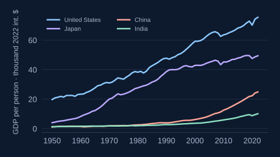

Long-run growth
Why are some countries
so much richer?

Start with the differences in living standards. Then ask what capital, ideas, and institutions can explain.
Data · Maddison Project · 1950–2022
Explore Chapter 3 ↗DATA. MODELS. UNDERSTANDING.
Big questions.
Evidence you can explore.
A Python Companion to Intermediate Macroeconomics. Bring economic data to life, put models to work, and connect the two—with code you can run and change.
FROM QUESTIONS TO UNDERSTANDING
One book brings together three ways of working.
Explore an idea, test it, and make it your own.
Compare countries, trace long-run changes, and examine turning points. Make the stylized facts visible before choosing an explanation.
Explore Data Apps ↗Change a parameter. Follow the mechanism. Use interactive diagrams to see what a model predicts—and where its assumptions matter.
Explore Figure Apps ↗Run the Python notebooks in Google Colab. Listen to chapter discussions, follow the transcript, and bring the material into your teaching.
Listen to AI Podcasts ↗CHOOSE A PATH THROUGH THE BOOK
Chapters 3–6 · Appendices D–G
Capital, technology, ideas, and the deep roots of income differences.
Chapters 7–15 · Appendices H–I
Employment and inflation, recessions and recovery, and policy responses.
Chapters 16–20
Consumption, investment, public budgets, trade, and exchange rates.
THE COMPLETE COMPANION
Read online or open an editable Python notebook.
Nothing to install.
No matching chapters. Try another search or topic.